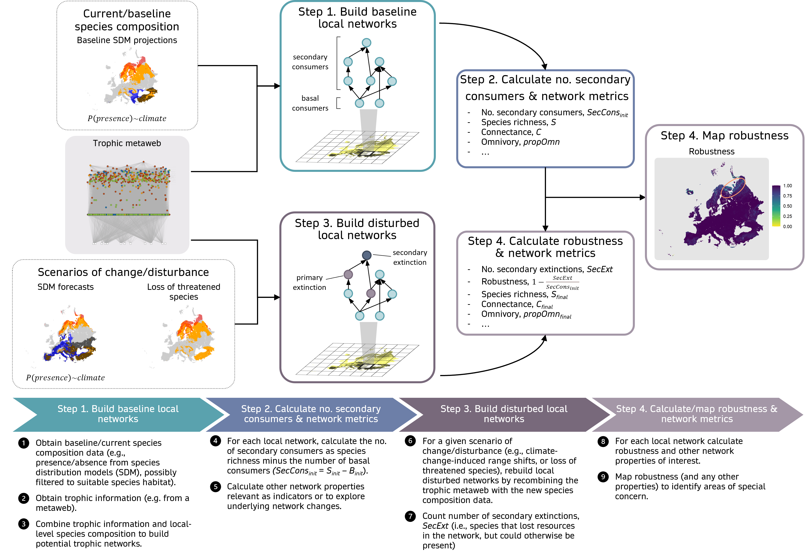

Decision-makers need to act now to halt biodiversity loss,
and ecologists must provide them with relevant species
interaction indicators to inform on community- and
ecosystem-level changes. Yet, the integration of ecological
networks into conservation is still virtually nonexistent.
Here, we discuss challenges and opportunities related to
uncertainty, interpretability and relevance of network
metrics applied to conservation. We argue that existing data
and methodologies are sufficient to generate network
information usable for conservation, and to overcome
existing challenges. Interaction network indicators must
meet criteria important to decision-makers and be tied to
specific conservation goals, which requires academics to
better engage with practitioners. We suggest network
robustness as an indicator for biodiversity management and
showcase it in a workflow to inform decision-making.
Practitioners and scientists increasingly need
multi-species and whole-ecosystem indicators that allow
integrating species interaction networks into biodiversity
conservation and management.
Explicit and quantitative integration of ecological
network indicators into conservation is still lacking due to
challenges with network uncertainty and accessibility to
practitioners.
The resulting gap between network science and management
leads to decisions being made without considering available
scientific knowledge.
We identify opportunities in closing this gap. Despite
uncertainty, the field of network ecology is mature enough
to offer quantitative insights into ecosystem responses to
environmental changes.
Simple network metrics that fit criteria important to
decision-makers and can be used with current data and models
are promising starting indicators to inform conservation and
management.
Can
interaction network knowledge be quantitatively used for
biodiversity conservation and management?
The need to shift from single-species conservation
approaches to multi-species and whole ecosystem approaches
has long been recognized [1,2]. Network information can
provide a new perspective for whole ecosystem assessments in
biodiversity conservation and management. Preserving species
interactions can ensure long-term population persistence and
maintain ecosystem functions and services [3,4]. Focusing on ecological
networks as conservation targets promotes the stability of
populations and ecosystem functions and minimises negative
outcomes regarding species extinctions [5–7]. Recent reviews list
specific interaction network metrics that decision-makers
can use [8]. Implicit network
information has already been integrated into conservation
planning, for example through consideration of keystone
species with disproportionate effects on their communities,
which should facilitate the uptake of network-based
biodiversity indicators in decision-making [2,9,10, see Box 1].
Despite the potential benefits, conservation practices
rarely explicitly consider information derived from measures
of the structure of ecological networks. Conservation policy
and practice still heavily focus on single species and
habitats. Uncertainty about network structure and responses
to human disturbances mirrors concerns in macro-ecological
and ecosystem models [11,12]. Additionally,
identifying which interaction network metrics are suitable
biodiversity indicators with clear interpretation for
conservation remains challenging.
Decision- and policy-makers must act now to bend the
curve of extinction and accelerate ecosystem recovery [13,14]. Ecologists need to
provide them with useful network and ecosystem-wide
information. For instance, protected area planning could
prioritise regions where mutualistic interaction partners or
prey and predators overlap [15], or where there is high
trophic diversity and redundancy, enhancing robustness to
extinctions [16]. Moreover, since
interaction network structure is linked to ecosystem
functioning and ecosystem service provision, focusing on
network metrics changes for conservation targets should
ensure ecosystem stability and service delivery [e.g.,
pollination, pest control, food production, 5,7,17]. Given the global goals
to maintain ecosystem services [Goal B of the Kunming-Montreal
Global Biodiversity Framework, 18], assessing network
structure stability changes should help managers and
decision-makers prioritise areas to maintain ecosystem
functioning and resilience [5,19].
Here, we identify the major challenges and opportunities
in incorporating interaction network information into
biodiversity conservation and ecosystem management. We
demonstrate how simple approaches and indicators can provide
relevant information for managers. Our focus is on
probabilistic and binary species interaction networks, where
nodes represent species and links represent the probability
or presence of an interaction [20], rather than energy flow
networks already covered by Fath et al. [8]. Additionally, we present
a perspective where networks are used as biodiversity
indicators and, in a forecasting context, to evaluate
network responses to future environmental change scenarios
and management strategies. Despite challenges relating to
uncertainty, interpretability and relevance, we argue that
we have sufficient scientific evidence and tools to apply
network concepts to management and conservation in the face
of global change. In particular, testing and exploring
network indicators can accelerate the establishment of
operational monitoring frameworks.
Box 1 - Trophic role of keystone
species
Explicitly considering networks in conservation and
decision-making (i.e. by monitoring and managing for
network-derived properties) is not a drastic shift, as
networks are often implicitly included in conservation
decisions and recovery plans. The keystone species concept,
frequently mentioned in conservation literature [e.g., 2,21] and highlighted by
initiatives focused on rewilding and ecological restoration
[22,23], is linked to the
disproportionate effects some species have on their
(trophic) networks [24, also see 25 for
the diverse roles of species identified as
keystones]. Similarly, several large carnivores have
been associated with trophic cascades, where effets of
predator declines propagated across food webs to herbivores,
mesopredators, and beyond [26]. This reflects network
consideration through species’ effects on others, even if
network-specific properties are not explicitly quantified –
i.e. metrics like connectance, species trophic level, or
centrality do not explicitly enter planning or
decision-making.
Importantly, keystone species are often tied to
quantified conservation targets. For example, prairie dogs
(Cynomys spp.) are considered keystone species due
to their important ecosystem functions and large impact
compared to other herbivores, which are not replicated by
other species [27,28]. The Recovery Strategy
and Action Plan for the Black-tailed Prairie Dog
(Cynomys ludovicianus) in Canada identifies it as a
conservation priority due to its keystone status, crucial
for the recovery of the Black-footed Ferret (Mustela
nigripes) and serving as a vital food source for
several other at-risk species [29]. Conservation targets
for Black-tailed Prairie Dogs in Canada include maintaining
a minimum area of occupancy of 1,400 ha across 20 colonies
and a minimum average population density of 7.5
individuals/ha by 2040, ensuring at least an 80% probability
of population persistence over 50 years [29].
The implicit consideration of network structure in
conservation targets can facilitate the uptake of new
network-based indicators by practitioners and
decision-makers. Indeed, knowing this structure provides
additional ways to identify which species are potential
keystones, beyond their emblematic nature [30]. Other forms of
network-thinking are similarly part of management
considerations, such as spatial ecological networks planning
[31] and ecosystem-based
management [11]. Explicitly considering
network-based indicators will complement these forms of
network-thinking and enhance conservation assessments to
include ecosystem-wide components.
Challenges &
opportunities
The explicit integration of network information into
management and conservation faces several challenges linked
to uncertainties and lack of interpretability and relevance
of network metrics for practitioners. These challenges will
hinder making effective decisions, for example on what
biodiversity and network-related properties need to be
measured and monitored, what conservation targets and
management actions should be applied, how often to
re-evaluate decisions, etc. Hence, we can expect challenges
at different stages of management planning and
decision-making [e.g. 32], such as the evaluation
of current conditions or upon decisions on possible actions
(e.g. responsive, preventative, etc.).
Uncertainty
Network Structure and
Composition
There is uncertainty in network structure, composition,
and variation across space and time, which affects
conservation assessments and actions [33,34]. Empirical studies on
networks are often spatially disjointed, biased
geographically and depending on interaction types, and
rarely replicated [35–37]. Sampling biases can
distort reported network patterns [38,39]. Terrestrial and
freshwater food webs are less studied than marine ones,
often with different research objectives [e.g.,
determining the effect of environmental factors, rather than
investigating management-related elements such as
sustainability, 35,40]. Such deficits of
information may prove problematic when conservation
decisions need to be made.
Despite these challenges, existing methodologies can help
integrate network information into conservation, while
empirical data continue to be gathered. Networks can be
constructed from extensive, long-term monitoring datasets to
analyse food web structure and temporal stability [41,42]. Building metawebs of
all potential interactions in a region or species pool, like
the pan-European terrestrial tetrapod metaweb [TETRA-EU,
43], provides an “upper
ceiling” for possible interactions [44,45]. Metawebs can inform
broad-scale assessments and have already been used to derive
spatially explicit network properties and generate
conservation-relevant information [46–48]. For instance, Albouy et
al. [46] used a metaweb to
examine robustness to extinction scenarios for marine food
webs, showing higher robustness in coastal waters compared
to open waters and highlighting some potential to absorb
perturbations. Moreover, metaweb inference approaches allow
us to circumvent the lack of available local interaction
data [45] and, when used with
probabilistic networks, to integrate uncertainty and
variation in network structure across space [49]. Network properties and
their uncertainties can therefore be measured for
broad-scale assessments of variation in network structure,
and to derive network indicators that can be used to inform
decisions and planning (Boxes 2-3).
As new empirical data becomes available, these predictions
can be evaluated, refined, and become more informative [50]. We discuss the
challenges surrounding their validation in our Concluding
Remarks.
Network
Responses to Environmental Change
Uncertainty exists in how networks will respond to
environmental changes and disturbances, particularly for
interaction rewiring and changes in interaction strength.
Questions remain on the extent of rewiring due to species
turnover versus prey switching and behavioural adaptation,
and how these changes will propagate across trophic
levels.
While data gaps exist, modelling and inference can
explore the limits of network rewiring under current or
future conditions (Box 3). Rewiring potential is likely
captured in existing and inferred metawebs [51], which can be combined
with simulations to anticipate network changes. For
instance, Dansereau et al.’s [49] approach can be extended
to explore climate change impacts on network structure,
given the dual uncertainty in species interactions and
future species ranges. Moreover, network models (and
information) do not need well-constrained or low uncertainty
predictions before they can inform management decisions on
interventions like species eradication, especially if they
tend to correctly identify whether effects on other species
will be positive or negative [52]. Model uncertainty can
also be high despite high quality data [52]. Regardless of its
generality, this result suggests that the performance of a
model should be monitored whenever new data are added.
Similar trends of model change in performance with
additional data have been reported in the study of species
distributions [53].
Approaches to include specific types of network response
uncertainty in conservation and management have also been
proposed. Van Kleunen et al. [54] suggested a multi-step
framework for decision-making under uncertainty for species
introduction into ecological networks, based on conservation
decision theory. This framework includes: the identification
of management objectives, the evaluation of outcomes for
management (including multiple outcomes, evaluation of
trade-offs, and assessment of uncertainty), and the
improvement of future predictions through an adaptive
management framework. Van Kleunen et al.’s [54] decision-making approach
can be applied now, despite uncertainties, to guide
management of species introductions.
Compounding
Uncertainty in Change Types
There is compounding uncertainty in the type and strength
of change applied to a network. Climate uncertainty, for
instance, results from uncertainty in future greenhouse
gases emissions (i.e. emission scenario uncertainty), in
climate processes (general circulation model uncertainty)
and their stochasticity (model run uncertainty). For
networks, we add uncertainty in changes resulting from
disturbance regimes (e.g. fire, drought, pests) and in
species distribution predictions [which can
result from direct impacts of abiotic change, of disturbance
regimes and of biotic changes that may be linked to network
structure itself, 55,56]. If accounted for
simultaneously, these uncertainties will inevitably lead to
high variance in predicted network responses.
We can estimate some uncertainty through backcasting:
past environmental changes are used to predict changes in
network metrics that are cross-validated against observed
past networks. Fisheries data, for instance, allow
reconstructing well-resolved networks over time, which can
be related to known environmental changes [57–59] and be used to calibrate
predictive network models, like bayesian networks [60]. Backcasting models,
used as ex-ante scenarios of change, have been successfully
used to simulate and assess the effectiveness of
conservation actions on ecosystem services [61].
Simulating scenarios of change can also help delimit the
possible changes in network structure [Box 3, 62]. When combined with
metrics of network change and sensitivity to disturbance,
these projections can be used to identify target areas that
show fragility to an array of scenarios and are of special
concern, or that show less fragility and could be considered
refugia. They can also highlight problematic or incomplete
sampling. Projections will also serve to perform validation
and assess indicator behaviour in an empirical setting,
whether through existing data or backcasting exercises,
which could lead to network-specific monitoring
programs.
Interpretability and
relevance
Network metrics are often not intuitive or deemed
relevant for practitioners and decision-makers. Many metrics
are complex and may not clearly correlate with ecosystem-
and species-level responses, particularly in applied
contexts. For instance, omnivory and network motifs are tied
to food web persistence and extinction risks [63,64], highlighting their
ecological relevance. On the other hand, while network
nestedness indicates a buffer against extinctions and
fluctuations in mutualistic networks, this is less clear in
antagonistic networks [7]. Connectance has also
been tied in contrasting ways to network stability [e.g.,
higher connectance leading to increases or decreases of
invasion success rates given invader trophic levels, 65,higher connectance linked to
higher robustness to extinction, but larger extinction
cascades, 66].
Not all network metrics are suitable as conservation
indicators, nor do they need to be. Several have been
reviewed for their relevance and limitations in achieving
conservation goals (Louise O’Connor, PhD thesis, Université
Grenoble Alpes, 2022i; see Table 1 therein). For
example, prioritising trophic networks with stabilising
motifs when selecting protected areas can help achieve
ecological resilience goalsi. This information
can already be used towards conservation planning but it
needs to be both accepted by and available to
decision-makers and managers.
First, metrics must meet decision-makers’ criteria. The
ROARS (being Relevant, Objective, Available, Realistic,
Specific) and SMART (Specific, Measurable, Achievable,
Replicable, Time-bound) criteria [[8]; see Table 3 therein]
focus on the decision-makers’ receptiveness to suggested
indicators during the selection, paving a way to communicate
network information with stakeholders and embed network
indicators in ecological monitoring and ecosystem health
assessments. Network indicators will then need to be
evaluated in terms of usefulness to achieve conservation
goals [as in O’Connor, 2022i] and decision-maker
receptiveness [as in 8], as we move towards
developing ecosystem management and monitoring frameworks
that quantitatively and explicitly embed network indicators
(see example in Box 2).
Second, network ecologists have the opportunity to expand
their focus from the development of mathematical tools,
theory and theoretical validation to involving
decision-makers and meeting their needs [67]. Consensus for
conservation goals can be achieved through mixed methodology
such as iterative and anonymous Delphi panels [see 68
for applications in ecology]. Engaging stakeholders
in this way would ultimately provide valuable guidance to
prioritise new fundamental research questions and
methodological development. Although they do not ultimately
make the decisions, network ecologists must be proactive in
this process, especially given the limited time and staffing
resources across many institutions where decisions are made.
This process takes time and co-production effort, and needs
to be initiated by academics who can guide and support
practitioners in designing management strategies and making
conservation decisions using network information. Academics
place a strong focus on the development of tools and
knowledge, but ensuring their adoption (particularly for
non-academics) will require delivering them in a form that
can instantly be used with minimal additional work [69].
Finally, network ecologists can take concrete steps to
ensure that network-based measures are perceived as relevant
by decision-makers. Workshops and stakeholder involvement
are essential to bridge the gap between science and practice
[69] and can facilitate
choosing appropriate metrics [8]. Involving a wide-range
of ecosystem-management players, and creating new
opportunities to actively involve stakeholders in deciding
how network information can be applied, will be key to
ensure receptiveness and a speedy uptake of indicators for
management planning and actions. Forecasting changes in
network structure under environmental and management
scenarios (Box 3)
and linking network indicators to ecosystem services [17] can enhance
receptiveness. This will provide essential information on
risks, on boundaries of change given environmental
conditions, and on the effectiveness of certain management
actions in achieving conservation targets [70].
Box 2 - Assessing the relevance of a
potential network indicator for decision-making
Network metrics should be evaluated using criteria
important to decision-makers to ensure their relevance as
indicators and encourage adoption. In addition to the ROARS
and SMART criteria, Fath et al. [8] suggest that effective
indicators should also “describ[e] directional change
[of ecosystems], [be] easily communicable to managers and
policy makers, [be] integrative and indicative to a known
response to a disturbance” [as per 71], and provide insight to
ecosystem functioning and services.
As an example, trophic network robustness to targeted
extinctions meets these criteria (Tbl. 1) and can be a
useful indicator of ecosystem integrity and stability to
environmental change. The structural stability of trophic
networks is closely linked to the stability of ecosystem
functioning [see review by 72], with trophic
interactions considered as ecosystem functions and services
(e.g., top-down pest control by predators). Here we show a
formulation of robustness derived from earlier works [73–75] that reflects the
capacity of a network (or the ecosystem it represents) to
withstand cascading extinctions:
where secondary extinctions are extinctions due to the
loss of other species and secondary consumers are consumers
of basal species (measured as network species richness minus
the number of basal species).
Robustness is easy to interpret (see Specific in Tbl. 1)
and to calculate using binary trophic networks, which are
more commonly available and can be derived from existing
trophic metawebs – this allows us to derive initial (even if
coarse) estimates of robustness at large, regional and local
scales (see references in Tbl. 1). It also relates to
ecological issues that have a firm place in ecosystem
management and conservation, and resonate with
decision-makers – numerous directives, policies and
management frameworks focus on avoiding species extinctions
(see examples in Tbl. 1).
Tbl. 1 illustrates the potential of robustness as a
network indicator and the process of detailing how it meets
the criteria mentioned previously. Evaluating network
metrics in this way is crucial for making them more relevant
and acceptable to decision-makers, as it demonstrates why
and how the indicator can be used effectively.
Table 1: Relevance of robustness as an
indicator. Dale & Beyler’s [71], ROARS and SMART
criteria for good ecological network indicators, as
described by Fath et al. [8], and how they apply to
robustness of trophic (non-energy flow) networks.
Robustness measures loss of species with respect to a
given (pre-disturbance) species composition.
Easily communicable to managers and policy makers
The relationship between robustness and species
extinctions is intuitive and easy to understand.
See also entry for “Relevant” below.
Integrative and indicative to a known response to a
disturbance
Trophic networks summarise the energy flows in an
ecosystem; their structural stability is linked to stability
of ecosystem functioning [72].
Robustness measures trophic network responses to
disturbances that lead to cascading species
extinctions.
ROARS
Relevant
It relates to an important part of an objective or
output
Preventing species extinctions is at the heart of
numerous conservation policies, directives and frameworks
[e.g.,
76,77–79].
Objective
Based on facts, rather than feelings or impressions and
thus measurable
Robustness is based on assessments of species
composition pre- and post- disturbance.
Available
Data should be readily available or reasonably
measurable
At the regional scales, available metawebs [e.g., 43,57] can be combined with
species range data (e.g., IUCNii and
GBIFiii) and scenarios of change to assess
robustness (see Box 3).
Sub-regional/local scale assessments are possible in
locations with monitoring data [e.g., 41,42].
Realistic
It should not be too difficult or too expensive to
collect the information
Marine and freshwater network data are already being
collected as part of monitoring programs and fisheries
activities;
Terrestrial metawebs exist [43] or can be inferred [80]
Methodology to calculate robustness is not overly complex
and can be pipelined (see example below).
Specific
The measured changes should be expressed in precise
terms
Robustness is calculated as 1 minus the ratio of
secondary extinctions to the initial number of secondary
consumers. It is scaled from 0-1, with 1 indicating maximum
robustness (no secondary extinctions) and 0 indicating no
robustness (all secondary consumers went secondarily extinct
due to loss of feeding resources).
SMART
Specific
Measured changes should be expressed in precise terms
and suggest the direction of actions
See entry for “Specific” above.
Maps of robustness can indicate hotspots and priority
areas for conservation.
Networks with high robustness will indicate ecosystems
whose structure is more stable and that could be managed as
“safety nets” and/or with more liberal use. Those with low
robustness should be further assessed for their uniqueness
(e.g,. uniqueness of species composition and interactions,
of habitat type, etc.) to plan conservation
actions.
Measurable
Indicators should be related to things that can be
measured in an unambiguous way
In an empirical setting, there may be ambiguity in
determining whether an extinction was secondary (due to loss
of other species in the network) or primary (due to, e.g.,
loss of climate suitability).
In a modelling setting secondary and primary extinctions
can be determined. Null models can be used to test whether
forecasted extinctions significantly deviate from
random.
Uncertainty in both network species composition and
structure will need to be recognised and accounted for
explicitly whenever possible [e.g., 49]
Achievable
Indicators should be reasonable and possible to reach,
and therefore sensitive to changes
See entry for “Available” above.
Backcasting and historical observational data can be used
to gauge the sensitivity of robustness to past environmental
change.
Forecasting data can be used to assess robustness
boundaries to expected changes and complemented with
monitoring data to verify how networks are responding to
change.
Replicable
Measurements should be the same when made by different
people using the same method
Transparent and freely accessible pipelines can be
developed and automated to ensure repeatability.
Time-bound
There should be a time limit within which changes are
expected and measured
This likely depends on the species and type of
environmental changes considered, given different life cycle
histories and species’ sensitivities to change.
Box 3 - An accessible workflow applying
robustness to inform decision-making
Effective decision-making requires indicators based on
accessible and reproducible analysis workflows that evaluate
a range of scenarios. We demonstrate the potential of
robustness with a workflow that uses different network
disturbance scenarios and open-access data (Fig. 1). By
using extreme scenarios, we can explore the boundaries of
robustness to forecasted environmental change. The framework
can be applied spatially to identify target areas for
management and conservation action (Fig. 2) or to single
networks.
Workflow steps:
Build local ‘reference networks’ by combining a regional
metaweb of interactions with ‘reference’ local species
presence/absence information (‘baseline’ referring to any
reference period) – species that interact in the metaweb and
are locally present, will appear and interact in the local
network;
For each reference network, calculate the number of
secondary consumers (consumers of basal species) and other
relevant network metrics (e.g., species and average trophic
level, connectance, etc.)
Build local ‘disturbed networks’, by combining the
regional metaweb with species ranges projected under
different scenarios;
Calculate and map robustness and other network metrics
(Fig. 2).

Figure 1: Workflow to
calculate robustness. Simple network metrics like
robustness can be incorporated into workflows to assess
potential ecosystem fragility to scenarios of disturbance
and inform management and decision-making at large scales.
See supplemental information online for full workflow
details.
Our example explores the lower boundaries of pan-European
trophic network robustness by submitting vertebrate networks
to two extreme scenarios: worst-case climate change (CMIP5
RCP 8.5, equivalent to CMIP6 SSP5-8.5), and failure to
protect endangered species (IUCN levels: critically
endangered, CR, endangered, EN, and vulnerable, VU; Fig. 2).
Further analyses could be focused on investigating which
species are forecasted to be lost, their roles in the
networks and best strategies to protect these networks from
a multispecies perspective. For instance, inspecting initial
species richness and trophic positions of extinct species
can help identify network- and species-level attributes that
may be related to robustness (Fig. 2, lower panels). Antunes
et al. [17] proposed a similar
workflow to calculate network-provided Nature’s
contributions to people. Ours differs from theirs in that it
requires less sophisticated and less data-hungry
methodological approaches. Together with the accessible
automated pipeline [81], this should facilitate
and accelerate uptake by practitioners, managers and
decision-makers.
Figure 2: Robustness
of European vertebrate networks to disturbance
scenarios. Extreme scenarios of climate change and
of species extinctions can be used to explore (lower)
boundaries of network robustness and identify areas where we
may expect a high number of cascading (secondary)
extinctions and, consequently, larger disruptions to
ecosystem functioning and services (upper panels). Further
analyses of initial network metrics allow a deeper look into
what may drive network robustness by comparing trophic
information between primary and secondary extinctions (lower
panels, here grouped by quantiles of robustness values). In
this example, most networks are very robust to extinctions
driven by a) climate change or b) the removal of endangered
species listed in IUCN, but several networks in Northern
Europe show lower robustness to targeted IUCN extinctions
(upper panels). For networks that suffered secondary
extinctions (where Robustness < 1; ‘Sec.’ bands on lower
panels), larger networks (higher initial species richness)
were more robust and, as expected, secondarily extinct
species occupied higher trophic positions than primarily
extinct species (‘Pri.’ bands). See supplemental information
online for more detail. Data and analyses for this figure
were adapted from Ceres Barros, PhD thesis, Université
Grenoble Alpes, 2017iv.
Concluding remarks
Ecological networks already can and should be used as
indicators in biodiversity conservation and ecosystem
management. Sufficient data is available for initial
assessments of network structures and responses to change.
Additionally, we have relevant network indicators for
ecosystem management and conservation that can be weaved
into management frameworks and monitoring programs. Starting
now ensures that future data will be useful to detect
network changes and to address current knowledge gaps.
We recognize that the lack of empirical support for
theory and scenarios of network responses (including
robustness) to environmental change can refrain academics
from providing guidance to practitioners. Robustness and
extinction studies usually rely on simulations to
investigate effects of species losses (rather than
observations or experimental removals) and predictions
remain mostly untested in the field [[82]; see Table 1 therein for
some empirical validation examples]. Overcoming this barrier
will require setting up empirical programs that go beyond
documenting networks, and towards field and lab studies of
network responses to realistic disturbances. Yet, despite
this and other limitations (i.e., data, uncertainty, and
interpretability challenges), we believe the field is
sufficiently mature to make recommendations for ecosystem
management and conservation as these programs are
implemented.
We envision five important aspects for future directions
(see also Outstanding Questions). First, there should be
developments addressing evaluation, propagation, and
communication of uncertainty in network structure and
metrics. It will be key to a) integrate uncertainty robustly
into management frameworks and move towards more transparent
and informed decisions, but also to b) use existing tools
and data to compare known network and ecosystem changes with
predictions (e.g. backcasting), estimate boundaries of
future network changes (e.g. forecasting), and assess the
usefulness of network metrics as indicators of future
change. Second, network considerations will need to be
explicit in future sampling and monitoring designs, and in
ecosystem conservation regulations and decisions. Third,
current data, network models and indicators need to be more
widely assessed for their usefulness for ecosystem
management, which should actively involve stakeholders.
Fourth, empirical programs focused on testing and measuring
network (metrics’) responses to change will need to be set
up. Finally, incorporating network information explicitly
into conservation will require developing network-based
targets—specific, quantified metrics to obtain and
thresholds to respect based on whole network
characteristics.
Outstanding questions
How variable is network structure across space and time
and does it influence the usefulness of network metrics as
indicators of ecosystem functioning and stability?
What network metrics are ubiquitous, reliable and
applicable indicators of ecosystem functioning and
stability?
How much can we expect networks to change given
uncertainty in future environmental conditions?
How can current and future monitoring programs be
improved to sample network information relevant for
management?
How can we put in place a strong empirical program to
validate network indicators, which for now heavily rely on
simulations?
Acknowledgements
G.D. is funded by the NSERC Postgraduate Scholarship –
Doctoral (grant ES D – 558643), the FRQNT doctoral
scholarship (grant no. 301750), and the NSERC CREATE BIOS2
program. T.P. is funded by the Wellcome Trust
(223764/Z/21/Z), NSERC through the Discovery Grant and
Discovery Accelerator Supplements programs, and the Courtois
Foundation. WT, LOC and LM acknowledge support from the
European Union’s Horizon Europe under grant agreement number
101060429 (project NaturaConnect). JMM acknowledges the
support of Horizon Europe project BIOcean5D (award number
101059915) and the French Agence Nationale de la Recherche
through LabEx TULIP (ANR-10-LABX-41).
Executive Secretary of the
Convention on Biological Diversity (2022) Expert input
to the Post-2020 Global Biodiversity Framework:
Transformative actions on all drivers of biodiversity loss
are urgently required to achieve the global goals by
2050
CBD (2022) Decision adopted by
the conference of the parties to the convention on
biological diversity 15/4. Kunming-montreal global
biodiversity framework
![Figure 2: Robustness of European vertebrate networks to disturbance scenarios. Extreme scenarios of climate change and of species extinctions can be used to explore (lower) boundaries of network robustness and identify areas where we may expect a high number of cascading (secondary) extinctions and, consequently, larger disruptions to ecosystem functioning and services (upper panels). Further analyses of initial network metrics allow a deeper look into what may drive network robustness by comparing trophic information between primary and secondary extinctions (lower panels, here grouped by quantiles of robustness values). In this example, most networks are very robust to extinctions driven by a) climate change or b) the removal of endangered species listed in IUCN, but several networks in Northern Europe show lower robustness to targeted IUCN extinctions (upper panels). For networks that suffered secondary extinctions (where Robustness < 1; ‘Sec.’ bands on lower panels), larger networks (higher initial species richness) were more robust and, as expected, secondarily extinct species occupied higher trophic positions than primarily extinct species (‘Pri.’ bands). See supplemental information online for more detail. Data and analyses for this figure were adapted from Ceres Barros, PhD thesis, Université Grenoble Alpes, 2017iv.](figures/Fig2.png)